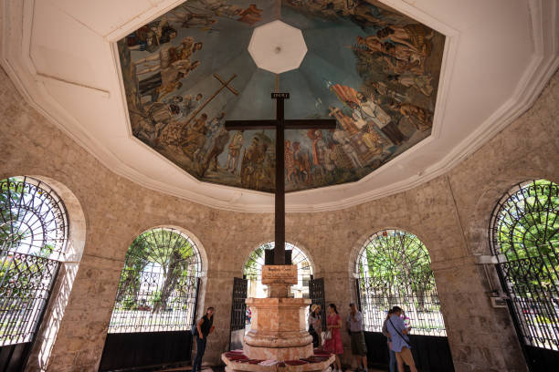
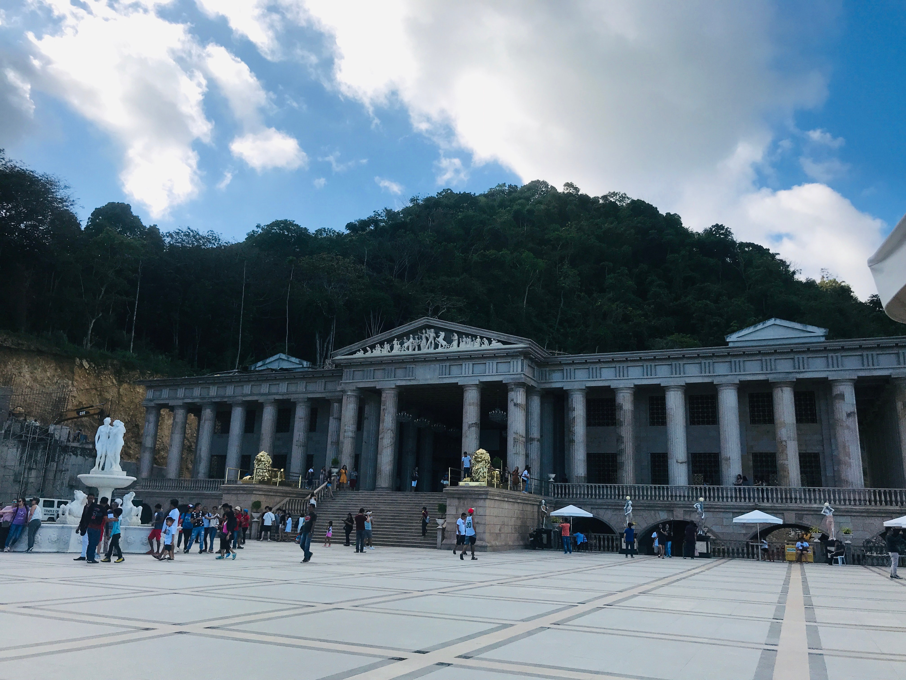
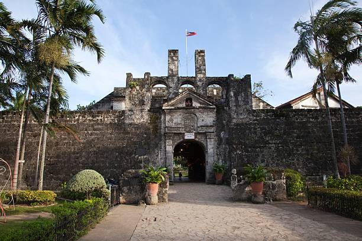

Famous Tourist Spots
Discover the best destinations Cebu has to offer

Magellans Cross
Magellan's Cross is a significant historical and religious landmark in Cebu City, Philippines, located in an octagonal pavilion on Magallanes Street near the Basilica Minore del Santo Niño and the Cebu City Hall.

Temple of Leah
The Temple of Leah is a historic site in Cebu City, known for its unique architecture and cultural significance.

Fort San Pedro
Fort San Pedro is the oldest and smallest triangular bastion fort in the Philippines, originally constructed in 1565 by Spanish conquistador Miguel López de Legazpi in Cebu City.
Add Photo
Spot Name
Short description of this tourist destination.
Add Photo
Spot Name
Short description of this tourist destination.
Add Photo
Spot Name
Short description of this tourist destination.